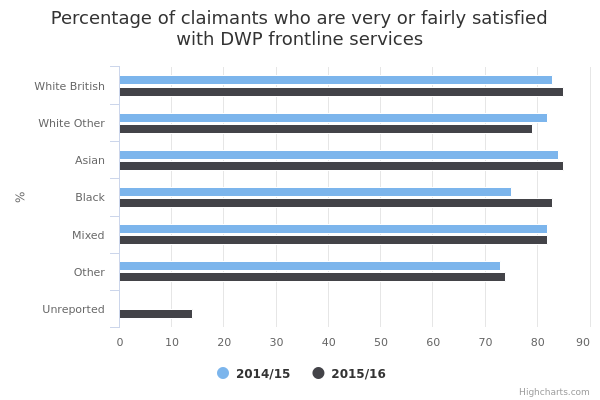

Customer satisfaction with Department for Work and Pension services
The main facts and figures show that:
-
in 2015/16, Asian and White British claimants were more likely to be satisfied (‘very satisfied’ or ‘fairly satisfied’) with Department for Work and Pensions (DWP) services (85%), while claimants from the Any Other ethnic group were least likely to be satisfied (74%)
-
from 2014/15 to 2015/16, the percentage of Black claimants who were satisfied with DWP services rose from 75% to 83%
-
from 2014/15 to 2015/16, the percentage of White British claimants who were satisfied with DWP services rose from 83% to 85%
-
satisfaction amongst other ethnic groups remained stable, with Asian groups at 85%, Mixed ethnic groups at 82%, White Other at 79%, and Other ethnic groups at 74%
Things you need to know
The data collected through the DWP Claimant Service and Experience Survey is used to make generalisations about the total population. As with any sample used to make observations on the total population, the estimates statisticians make are subject to a degree of uncertainty. The degree of uncertainty is greater for a group in which the number of participants is small, so it will be greatest for minority ethnic groups.
The commentary for this data only includes reliable, or ‘statistically significant’, findings.
Findings are statistically significant when we can be confident that they can be repeated, and reflect the total population rather than just the survey sample.
Specifically, the statistical tests used mean we can be confident that if we carried out the same survey on different random samples of the population, 19 times out of 20 we would get similar findings.
The commentary has focused on findings based on subgroups of at least 100 people to ensure that we report reliable findings.
All surveys carry the risk of biased results if some types of people were less likely to respond than others. To compensate for this, the responses to this survey have been weighted so they better reflect characteristics of the target population.
Satisfaction figures are estimates based on respondents who have had recent contact with the Department for Work and Pensions (DWP). This means they may not reflect the whole claimant population. Percentages may not add up to 100% due to rounding and the way some participants answer the question. For example, some survey participants may have incorrectly given more than one answer or forgotten to answer the question which means there responses were not included.
What the data measures
This data measures levels of satisfaction in claimants who have had recent contact with the Department for Work and Pensions (DWP).
A ‘claimant’ is someone who gets disability benefits, out-of-work benefits or state pension.
The DWP Claimant Service and Experience Survey is held every 3 months, and around 16,000 claimants are interviewed each year. These are selected randomly from all claimants who, in the previous 3 months, have either made a new claim or have contacted DWP about a change of circumstances for an existing claim.
Claimants are asked how satisfied they were with the service they received, and offered a 4-point scale to reply, from ‘very satisfied’ to ‘very dissatisfied’. Their answers are grouped together to show the percentage of claimants who are satisfied (very or fairly satisfied) and the percentage who are dissatisfied (fairly or very dissatisfied).
Why these ethnic categories were chosen
This data includes the 5 broad ethnic groups used in the 2011 census:
- White
- Mixed/Multiple ethnic groups
- Asian/Asian British
- Black/African/Caribbean/Black British
- Other ethnic group
It further breaks down the White group to White British and White Other (which includes Irish and Any Other White background).
The number of people surveyed (the ‘sample size’) was too small to draw any firm conclusions beyond the 5 broad ethnic groups and the further White British and White Other breakdown.
In 2015/16, the results included an “unreported” ethnicity category. This is made up of people whose ethnicity is unknown or who refused to answer. The unreported category was not used in 2014/15.
Customer satisfaction with DWP frontline services by ethnicity

View the numbers in a table
| 2014/15 | 2015/16 | |||
| White British | 83 | 16 | 85 | 14 |
|---|---|---|---|---|
| White Other | 82 | 15 | 79 | 18 |
| Asian | 84 | 15 | 85 | 14 |
| Black | 75 | 22 | 83 | 15 |
| Mixed | 82 | 17 | 82 | 16 |
| Other | 73 | 23 | 74 | 21 |
| Unreported | not collected | not collected | 14 | 27 |
Summary
-
in 2015/16, White Other and Any Other ethnic group claimants were least likely to be satisfied with Department for Work and Pensions (DWP) services compared to other ethnic groups (79% and 74% respectively)
-
in 2015/16, White British and Asian claimants were most likely to be satisfied with DWP services (85% each)
-
Black claimants saw the largest annual increase in the percentage who were satisfied with DWP services, from 75% in 2014/15 to 83% in 2015/16 (8 percentage points)
-
White Other claimants saw the largest annual decrease in the percentage who were satisfied with DWP services, from 84% in 2014/15 to 79% in 2015/16 (3 percentage points)
Download image and data
Methodology and data type
Purpose Of Data Source
The Claimant Satisfaction and Experience Survey (CSES) is used to measure and report on aspects of claimant satisfaction and experience in their recent contact with DWP.
Methodology
The population sampled is not the claimant base but rather those claimants that have had recent contact with the Department for Work and Pensions. The survey is carried out quarterly across the financial year, and interviews about 16,000 claimants per year (about 4,000 every 3 months). The DWP Claimant Service and Experience Survey results are ‘weighted’ to compensate for different response rates between different groups of respondents, so that the findings fairly represent the range of disability and out-of-work benefit claimants, as well as pension claimants.
The satisfaction measure is derived from survey responses to a single question in the survey which is then aggregated to overall measures of satisfaction and dissatisfaction.
Data type
Survey
Type of statistic
Other
Suppression rules
It is consistent with GSR norms. Any values based on fewer than five responses have been completely suppressed for confidentiality reasons. Values based on 5-10 responses are shown, but marked by an asterisk (*). These should be used with particular caution. Any values based on less than 100 responses have been suppressed for data quality issues. This is DWP standard policy.
Estimation
Percentages are given to 0 decimal place but all gaps and differences have been calculated on unrounded data Percentages have bee rounded-up if greater than or equal to 0.5 and rounded down if less than 0.5 of a percentage point. Estimates based on survey responses so subject to sampling error.
Further technical information
Weighting was applied to the data to ensure the survey respondents were representative of the population to which they were generalising.
Data source details
-
Department for Work and Pensions Equality Information (Customer Data)
-
Department for Work and Pensions
-
Jul-2016
-
July 2017
-
Annual